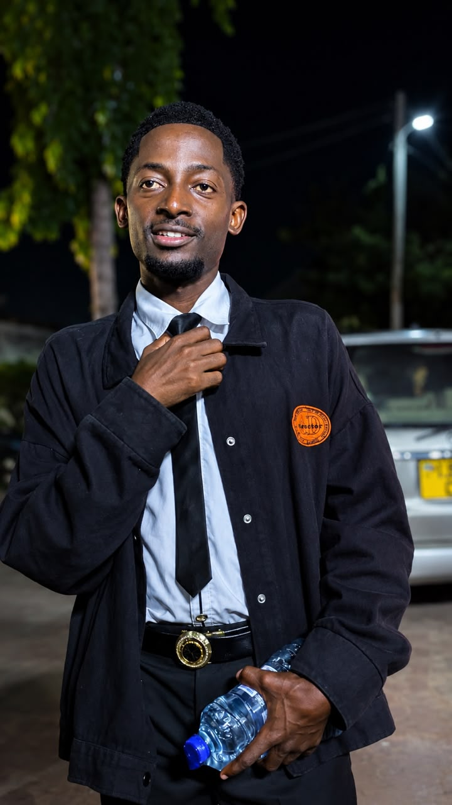

Kuhusu Mimi
Habari, Mimi ni 6wery.
Mtengenezaji mkubwa wa picha mbao na zile picha zenye vioo natengeneza
Mimi ni fundi na mbunifu wa picha za mbao za kisasa maalum kwa ajili ya kupamba na kurembesha nyumba. Kazi yangu ni kubadilisha kuta zako kuwa sehemu ya kuvutia na yenye muonekano wa kifahari kupitia sanaa ya kipekee ya mbao. Zaidi ya ubunifu wangu, nguzo kuu ya kazi yangu ni uaminifu na umakini wa hali ya juu—ninahakikisha unapata bidhaa bora kabisa kwa wakati na kwa makubaliano yaleyale tunayoweka.
 WhatsApp
WhatsApp
 TikTok
TikTok